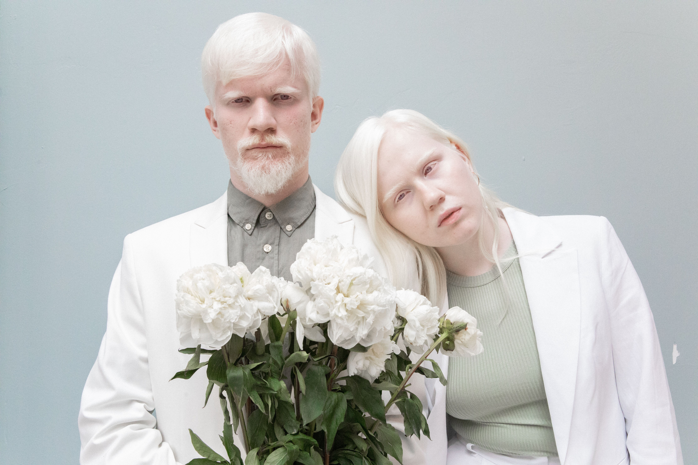

VOGUE es una marca de moda y estilo de vida reconocida a nivel mundial, que se ha convertido en un referente en la industria de la moda y la cultura popular. Fundada en 1892, VOGUE ha evolucionado a lo largo de los años para reflejar las tendencias y los cambios en la sociedad, manteniendo siempre su enfoque en la elegancia, la creatividad y la innovación.
En 1909 (poco después de la muerte de Turnure), el empresario Condé Montrose Nast compró la revista y comenzó su gran transformación. La convirtió en una publicación enfocada en la moda femenina, la belleza y el estilo de vida, además de iniciar su expansión internacional (lanzando ediciones en países como Gran Bretaña y Francia).
VOGUE No es una marca de lujo tradicional, sino una marca premium o de gama media-alta de motocicletas
El Met Gala: Aunque es organizado por el Museo Metropolitano de Arte de Nueva York (The Costume Institute), Vogue —y especialmente Anna Wintour— lidera la organización y el comité de este evento desde 1995, convirtiéndolo en la alfombra roja y la fiesta benéfica de moda más importante del mundo.

La era de las Supermodelos: En la década de 1990, bajo la dirección editorial de Anna Wintour, la revista catapultó a la fama internacional a las grandes supermodelos (como Naomi Campbell, Cindy Crawford, Linda Evangelista y Kate Moss), integrándolas de lleno en la cultura pop.
Vogue Moda es un espacio dedicado al mundo de la moda, las tendencias y el estilo personal. Nuestro objetivo es ofrecer prendas y propuestas que reflejen las últimas tendencias, combinando elegancia, comodidad y originalidad. Buscamos que cada persona pueda expresar su personalidad a través de la ropa, encontrando su propio estilo y sintiéndose segura en cada ocasión.
En Vogue Moda creemos que la moda es mucho más que vestirse: es una forma de expresión, identidad y creatividad.